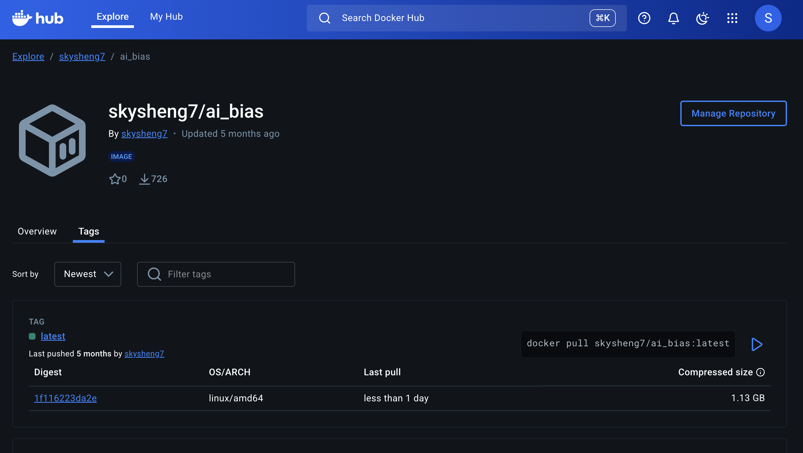
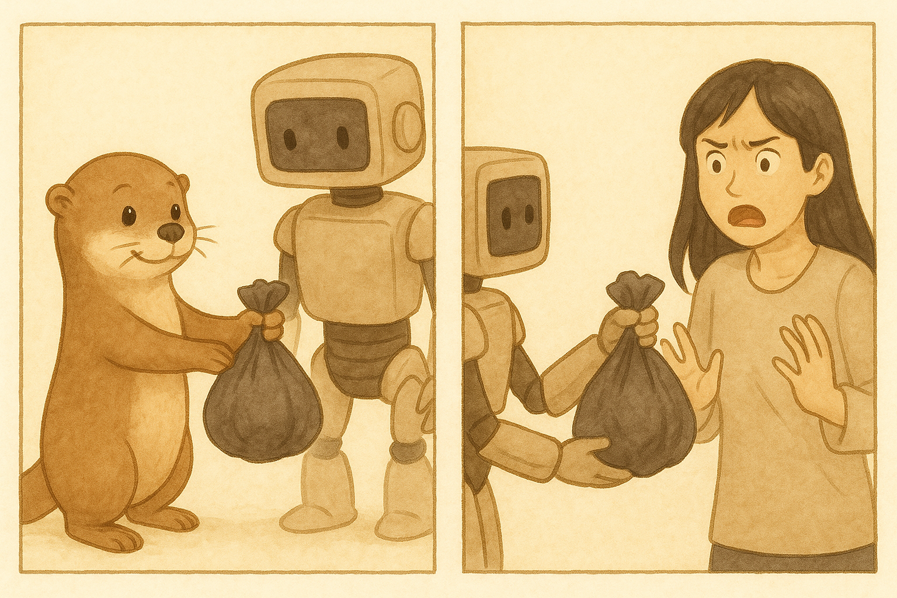

DSCI 522 Lecture 4
Data Validation with Pandera
Sky Sheng
Recap: Docker image on Docker Hub, then what?? 🤷♀️
- Check out this docker image for AI bias work

Next steps after Docker image on DockerHub
Next steps after Docker image on DockerHub
- To access the docker image using Docker Compose:
- Create a
docker-compose.ymlfile docker compose updocker compose rm
- Update your documentation (README, CONTRIBUTING, etc.) about how others should use your docker image.
🤩 Let’s organize our complete workflow!
🔧 Local Development
uv init --bare&uv python pin- Set
add-bounds = "exact" uv addpackages- Commit
pyproject.toml,uv.lock,.python-version - Write
Dockerfile - Create
docker-compose.yml - Push to GitHub
☁️ CI/CD & Deployment
- Add GitHub Actions workflow yml file
- Add Docker Hub Personal Access Token (PAT)
- Configure GitHub Secrets
- Workflow runs (auto/manual)
- Check Docker Hub for new image
- Locally,
docker pullnew image - Locally, command line
docker run
🐳 New GitHub Actions Workflow yml file
- Check out this new GitHub Actions workflow yml file Tiffany created
- Now you can replace steps 13 + 14 to:
git pulllocally to extract updateddocker-compose.ymlfile - run
docker compose uplocally to start the container - run
docker compose rmlocally to stop the container
Let’s breakdown the GitHub Action workflow!
- Inspect a workflow output
🙋♀️ What is && \ in Dockerfile?
FROM python:3.14-slim
# install command-line tools in one layer, then delete the download cache
RUN apt-get update \
&& apt-get install --yes --no-install-recommends make git \
&& rm -rf /var/lib/apt/lists/*
# copy uv from its official image
COPY --from=ghcr.io/astral-sh/uv:0.13.7 /uv /uvx /usr/local/bin/
# install the Python packages from uv.lock into /opt/venv
WORKDIR /home/project
ENV UV_PROJECT_ENVIRONMENT=/opt/venv
COPY pyproject.toml uv.lock .python-version ./
RUN uv sync --locked
ENV PATH="/opt/venv/bin:$PATH"Today: Data Validation!

Image generated by OpenAI GPT-5
Remember this roast my repo? 🔥

Data validation in action
Check out this data cleaning script I created for the Moo4Feed R package
✅ Data validation checklist
- Group Milestone 3: Make sure you check all the boxes!
💻 Let’s work with Pandera!
Image generated by OpenAI GPT-5
💬 Discuss with your group: How will you conduct data validation for your data to check all the boxes?
- ✅ Data validation checklist
Readings for this lecture
| What | Where |
|---|---|
| Required | Textbook: Data validation |
| Pandera | Textbook: Data validation in Python with Pandera |
| Commands | Docker cheatsheet, uv cheatsheet |